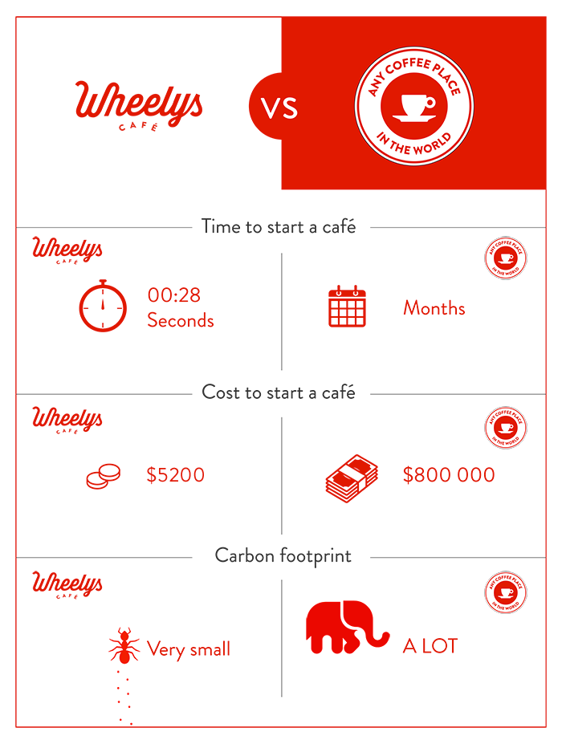

Wheelys are green. While other food franchises are just now realizing people care about the environment and are desperately running their diesel engines on imported coconut oil or weird things like that, Wheelys are cafés on BIKES! It was built from the start to be 876% more environmentally friendly than the competition.
Wheelys are fun! Don't you forget it! Just being out there collecting smiles is an experience worth paying for. But you won't be paying. They'll be paying you. It's crazy, which brings us to...
Wheelys are profitable. The margin on coffee is hard to beat. A cup that costs 20 cents to brew retails for more than $2. Since Wheelers don’t pay rent, utilities, or advertising, that profit stays with YOU! We've had eight hour days where we've made over $1,000. But that's not the ceiling, we're sure of it.
Wheelys are healthy. We serve healthy food. But Wheelys are healthy in more that one way; cycling makes you fit and you'll make friends while you're on the go, which has been proven to prolong your life.
Wheelys are connected. By owning a Wheelys café, you'll connect with over 100 other Wheelers all over the planet. Exchange tips on how to brew the perfect pour over, where to park your stand, alternative selling tricks, or just chit-chat.
In short, Wheelys are the first real challenge to the hegemony of the mega fast food giants—a green, lean, money-making machine.
What are the advantages of Wheelys compared to a static café? Here are some:

Thanks for your interest! We'll contact you soon!